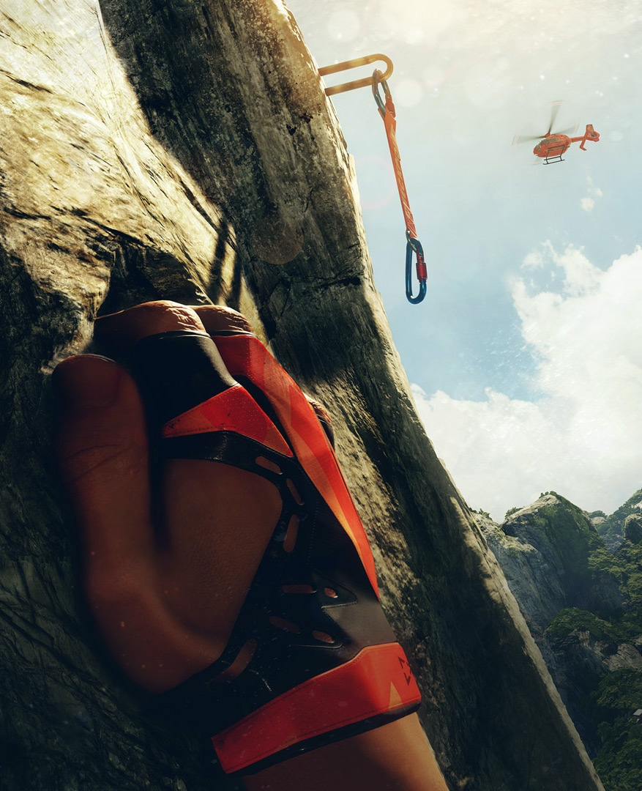
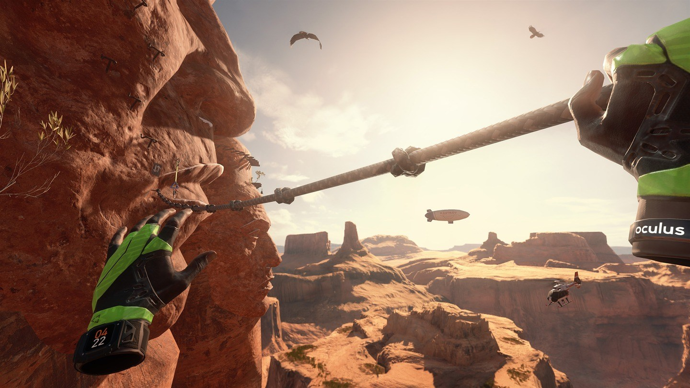
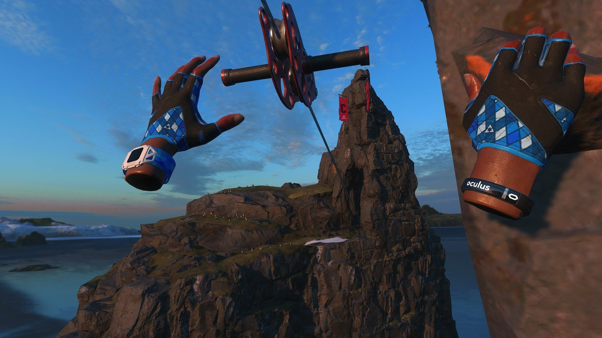
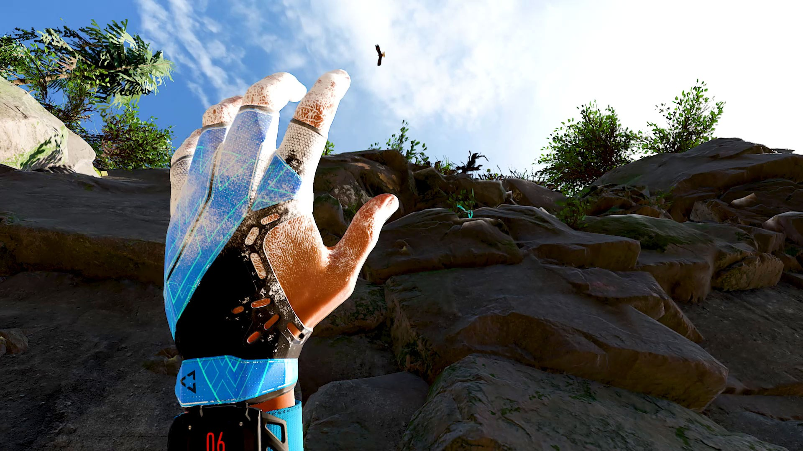
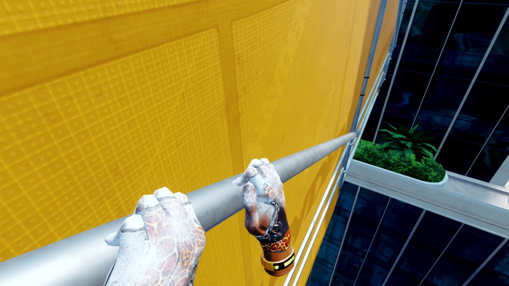
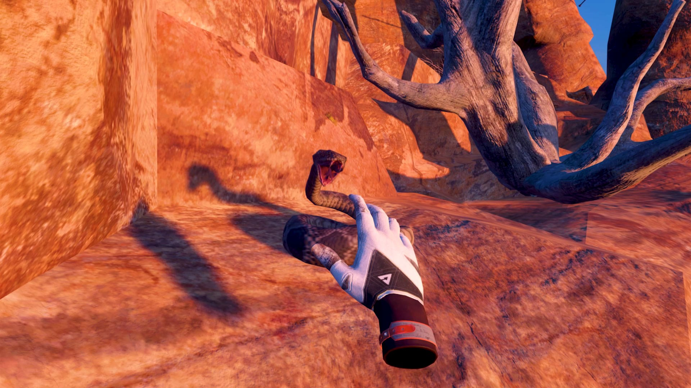
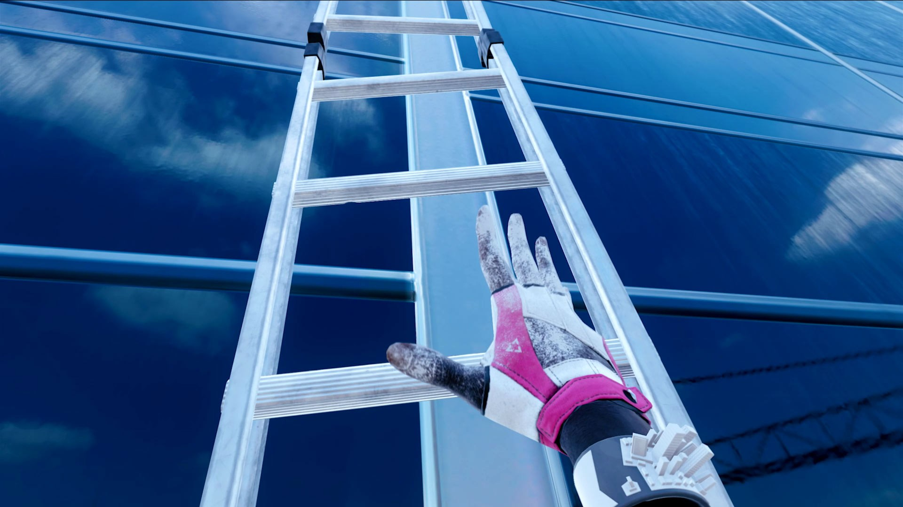

RUN PLAN: ROCK CLIMBER: THE RITUAL vs THE CLIMB 2
The one approval stop. After this page the rubric and bounds are frozen and the rounds run without me asking again.
Reference the critics see (blind)







Key art from crytek.com plus six developer screenshots as published by Road to VR. Stored privately under reference/, never shipped.
Who builds what
| Domain | Owns (files) | Contract |
|---|---|---|
| sim-input | src/sim.js, src/route.js, src/input.js, test/* | Pure, unit-tested climbing logic: route generation, two hands with reach/snap/arming/toggle grip, stamina, spring-damped body, rope catch, runes, summit. Touch + mouse + keyboard input → one Input shape. |
| world-light | src/world.js, src/post.js, src/env.js, shaders | The coupled cluster: wall geometry and PBR, holds and runes, rope mesh, sun/moon/sky/fog, dusk→night progression, particles, bloom + grain post. One owner so lighting, tone and sky never fight. |
| arms-camera | src/arms.js, src/camera.js | The Realistic Hand model (mirrored for the left), forearm + sleeve hiding the wrist seam, 2-bone IK from the shoulders, finger curl and tremble, camera rig (breathing, roll toward the loaded arm, look-up bias, catch shake). |
| hud-audio | index.html, src/hud.js, src/audio.js, assets/audio/* | Stick rings with stamina arcs, GRIP pills, height meter, rune progress, title and end screens, iOS safe-areas, synth SFX, and sourcing one licensed music track with credit. |
| integrator (1 per round) | src/main.js, CONTRACTS.md, review/** | Wires the four modules per CONTRACTS.md, runs the tests, proves it runs, captures the evidence critics judge (portrait 390×844 at three heights, desktop frame, fps, console errors). |
Rubric (frozen on approval)
| # | Criterion | What a 4 looks like | What an 8 looks like | Target |
|---|---|---|---|---|
| 1 | Rock, light and materials | Flat texture, no relief, one uniform light, sky a plain color. | Visible micro-relief from normal + AO, warm low sun with soft hand shadows on the rock, cool sky fill, tone-mapped HDRI sky that reads as dusk. | 7 |
| 2 | Hands and arms | Untextured blobs, wrong scale, static fingers, visible wrist seam. | Textured hand model at believable scale, fingers curl onto holds, forearm and sleeve continuous, tremble when stamina is low, chalk detail. | 7 |
| 3 | Climb feel and control clarity | Hands jitter or teleport, grabs miss unpredictably, body pops, keyboard or touch unusable. | Smooth weighted hand motion, snap within 16 cm, arming works, body sways and settles, rope catch reads clearly, both touch and keyboard complete the route. | 7 |
| 4 | Atmosphere and composition | Static light, empty sky, no depth cues, runes are plain colored blobs. | Dusk darkens to night with height (start / 20 m / summit frames differ clearly), fog-filled valley below, glowing bloomed runes, dust motes, distant silhouettes. | 7 |
| 5 | HUD and onboarding | Default fonts, overlapping controls, no feedback for grip state, unreadable on a phone. | Coherent palette and type, stamina arcs and grip pills that react, readable at 390×844 with safe areas, title explains the controls in under 10 seconds, credits present. | 7 |
| 6 | Performance and robustness | Under 20 fps in the phone viewport, console errors, a stuck state after a fall. | ≥ 30 fps average at 390×844 @2× with post effects on (measured from window.__ritual), zero console errors, fall → catch → summit all reachable, 5 minutes without a stuck state. | 7 |
| 7 | Audio and feedback | Silent, or clipped noise unrelated to events. | Wind bed that follows height, grip / release / rune / fall cues on the right frames, heartbeat at low stamina, one credited music track, mute persisted. | 7 |
Bounds (tunable here only)
Cost preview
Each round: 4 domain builders in parallel, then 1 integrator, then the critics. Rounds stop early when every criterion reaches its target or when scores plateau. This exceeds the default workflow size guideline on purpose; approving this page is the consent.